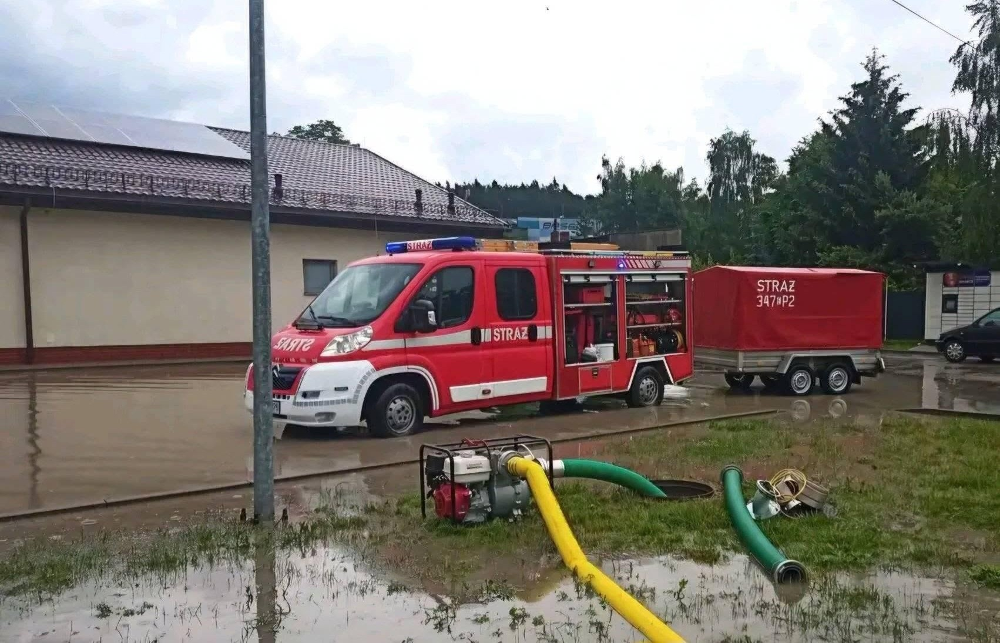
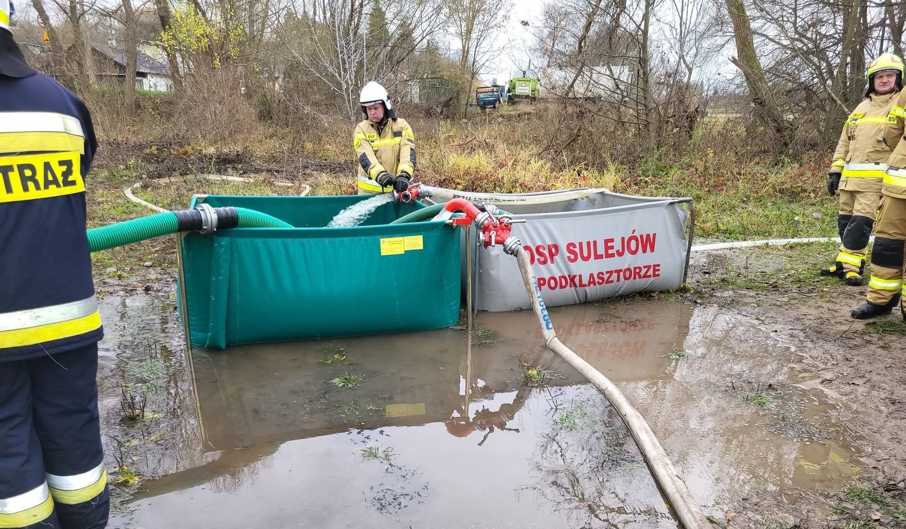

Służba, pasja i tradycja w OSP Podklasztorze
Nasza jednostka zrzesza druhny i druhów, którzy od 1968 r. bezinteresownie poświęcają swój czas, by chronić życie, zdrowie i mienie mieszkańców Podklasztorza i okolic. Bierzemy udział w akcjach gaśniczych, ratownictwie drogowym oraz usuwaniu skutków klęsk żywiołowych.



Sprzęt i Wyposażenie
Nasz sprzęt pozwala nam skutecznie reagować w sytuacjach zagrożenia.
Wóz Bojowy
Lekki samochód ratowniczo-gaśniczy na podwoziu Citroën Jumper. Wyposażony w zbiornik wody o pojemności około 500 litrów, zbiornik środka pianotwórczego, agregat wysokociśnieniowy z linią szybkiego natarcia, a także podstawowy sprzęt pożarniczy i ratowniczy.
Ratownictwo Medyczne
Wyposażenie do udzielania kwalifikowanej pierwszej pomocy, w tym zestaw PSP R-1 oraz sprzęt wykorzystywany podczas działań ratowniczych i zabezpieczających.
Poszukiwania i Ratownictwo
Quad wykorzystywany podczas działań poszukiwawczych, ratowniczych oraz dojazdu w trudno dostępny teren. Pojazd wyposażony jest w wyciągarkę umożliwiającą wykonywanie działań technicznych w terenie.
Ochrona Ludności i Obrona Cywilna
Poznaj sygnały alarmowe oraz podstawowe zasady postępowania w sytuacjach zagrożenia.
Ogłoszenie Alarmu
Sygnał akustyczny: dźwięk modulowany trwający 3 minuty.
Może być również przekazywany w komunikatach radiowych, telewizyjnych lub syrenami alarmowymi.
Odwołanie Alarmu
Sygnał akustyczny: dźwięk ciągły trwający 3 minuty[cite: 1].
Oznacza ustąpienie zagrożenia i możliwość bezpiecznego powrotu do codziennych czynności.
Jak się zachować po usłyszeniu alarmu?
- 1. Zachowaj spokój Włącz radio lub telewizję na lokalną stację i słuchaj komunikatów o zagrożeniu.
- 2. Schroń się Opuść otwartą przestrzeń, wejdź do najbliższego budynku, zamknij okna i drzwi.
- 3. Pomóż innym Udziel pomocy osobom potrzebującym (dzieciom, osobom starszym i niepełnosprawnym).
Władze Jednostki
Struktura organizacyjna OSP Sulejów Podklasztorze
Walne Zebranie Członków
Walne Zebranie Członków jest najwyższą władzą OSP. Podejmuje kluczowe decyzje dotyczące działalności, uchwala budżet, przyjmuje sprawozdania oraz wybiera Zarząd i Komisję Rewizyjną.
Zarząd OSP
dh Mariusz Bryk
Prezes
dh Jakub Domański
Naczelnik
dh Łukasz Kędziora
Wiceprezes
dh Sławomir Nowak
Wiceprezes
dh Mateusz Kałuziński
Z-ca Naczelnika
dh Dorian Zawadzki
Skarbnik-sekretarz
dh Marek Misztal
Gospodarz
Komisja Rewizyjna
dh Jan Bandos
Przewodniczący
dh Zdzisław Bełdowski
Sekretarz
dh Tadeusz Firmowski
Członek
Wspieraj OSP Podklasztorze!
Twoje 1,5% podatku nic Cię nie kosztuje, a dla nas jest ogromnym wsparciem! Pozwala nam na zakup nowoczesnego sprzętu ratowniczego i środków ochrony osobistej dla naszych strażaków.
KRS: 0000184471
Cel szczegółowy:
OSP Sulejów Podklasztorze
ul. Władysława Jagiełły 26
97-330 Sulejów
Dziękujemy za wsparcie!
Każda wpłata pomaga nam chronić Twoje bezpieczeństwo.